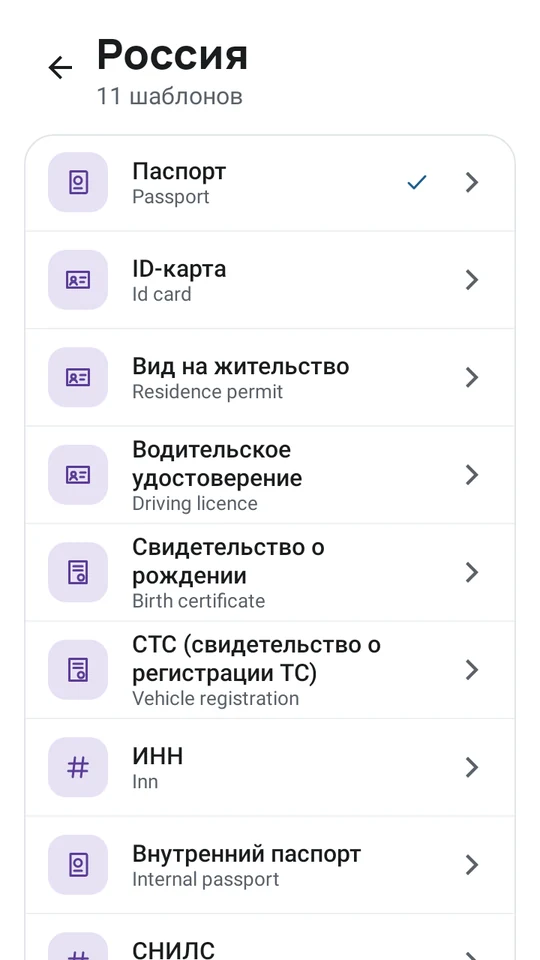

Local Safe
Пароли и документы. Без интернета, на вашем телефоне.
Зашифрованный сейф для паролей, банковских карт, заметок и документов — паспортов, удостоверений, водительских прав. Без аккаунта, без нашего облака и без слежки: у приложения вообще нет доступа в интернет. Всё хранится в одном файле KeePass, и он ваш. Бесплатно и без рекламы.
Скоро для iPhone и Android.
Без интернета — намеренно
В приложении нет сетевого кода, аналитики и аккаунта. На Android оно даже не просит разрешения на интернет. Через него ничего не уходит с телефона.
Сделано для документов
Шаблоны паспортов, удостоверений, прав и свидетельств любой страны с нужными полями. Фото и сканы — вложениями. На iPhone поля заполняются по фото.
Пароли, карты, автозаполнение
Логины, банковские карты и заметки, генератор надёжных паролей и поиск. Автозаполнение в приложениях и браузерах, вход по Face ID или отпечатку.
Один открытый файл KeePass
Сейф — обычный файл KDBX 4, зашифрованный AES-256 и Argon2id. Без привязки: он открывается в KeePassXC и других приложениях KeePass.
Синхронизация как удобно
Держите файл в iCloud Drive, Google Диске или любой синхронизируемой папке. Перед сохранением приложение сливает изменения с других устройств.
Легко переехать
Импорт из Safe+ (mySafebox), Chrome, «Паролей» Apple, Firefox, Bitwarden, 1Password, LastPass и KeePassXC.
И на компьютере
Отдельная программа для компьютера Local Safe не нужна: сейф — обычный файл KeePass. На Windows, macOS или Linux откройте его в бесплатном KeePassXC, а пароли в Chrome подставит расширение KeePassXC-Browser.
- Держите файл сейфа в облачной папке, которая есть и на компьютере: iCloud Drive, Google Диск, Dropbox или OneDrive.
- Установите KeePassXC и откройте тот же файл своим мастер-паролем.
- В KeePassXC откройте Инструменты → Настройки → Интеграция с браузером, включите её и отметьте Chrome (подходят и Firefox, Edge, Brave, Vivaldi).
- Добавьте в Chrome KeePassXC-Browser и нажмите Connect. Пока KeePassXC разблокирован, логины подставляются на сайтах.
По возможности правьте сейф на одном устройстве за раз: перед сохранением Local Safe сливает чужие изменения. KeePassXC и KeePassXC-Browser — бесплатные проекты с открытым кодом, не связанные с Migisweetlab.
Скриншоты


